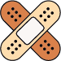

Nosotros
Somos una familia, nos apasiona pensar en como mejorar nuestros hábitos y cuidados frente al creciente uso de computadoras, uniendo las ideas de quienes quieren distribuir bienestar, con la gente que las espera.
En la actualidad nuestras ideas y recomendaciones llegan a millones de corazones y hogares de todo el mundo.
Cuidados
-
Posturas
Para que evites dolores y fatigas musculares debes mantener todas las zonas d el cuerpo de la siguiente forma:
Cuello: mantén la mirada siempre hacia el frente, evitando doblar el cuello, la parte superior de la pantalla debe quedar a la altura de tu línea horizontal de visión.
Hombros: siempre los debes tener relajados.
Codos: déjalos apoyados y pegados a tu cuerpo manteniendo un ángulo entre los 90° y 100°.
Brazos: no digites con los brazos en el aire.
Antebrazos: apóyalos sobre el escritorio, la silla que uses también debe contar con apoya brazos -

Lesiones
Nuestra espalda, cuello, cervicales, piernas y hombros son las zonas más afectadas por las exigencias diarias.
Escoliosis: desviación lateral de la columna vertebral.
Lordosis: curvatura hacia adentro de la zona inferior de la espalda.
Síndrome de fatiga crónica: esta fatiga no es el tipo de cansancio que desaparece después del descanso y limita la capacidad de ejecutar las tareas cotidianas.
Síndrome del Túnel Carpiano: esta enfermedad impide el movimiento natural de la muñeca, causando distintos grados de dolor.
Epicondilitis: se considera una variedad de la tendinitis por lo general esta lesión es causada por la falta de apoyo en el codo del brazo. -
Movimientos naturales
Una correcta postura va a acompañada de movimientos naturales y menos forzados del cuerpo a la hora de estar frente a una pc, como por ejemplo la distancia para alcanzar un vaso con agua y el esfuerzo que realizamos para llegar a el, es importante evitar este tipo de acciones con cualquier objeto.
-
Vista
Es importante un buen control sobre la fatiga en los ojos, la iluminacion ambiental afecta tanto como la luz azul de las pantallas en la vista. Podemos implementar lentes anti-reflex y blue-light.
Te dejamos unas recomendaciones para funcionar en la modalidad de teletrabajo
Mientras nos leías,
te sentaste derecho?
Todos somos concientes de nuestros malos habitos frente al uso prolongado de la computadora, pero podemos retomar una vida sana juntos.
Recomendación de productos
Mouse
Relacionado con el sindrome de tunel carpiano, es importante el uso del dispositivo con el brazo reposado lo mas natural posible para una correcta distribución de peso.
Teclados
Movimientos repetitivos de los dedos deben ser lo mas ligeros posibles, esto se puede lograr utilizando teclas de bajo gramaje de fuerza para evitar estres muscular.
Sillas
Es la base para controlar la postura del cuerpo y evitar cualquier tipo de estres fisico a largo plazo.
Mesas
Mejoran la distribución de las cosas frente a nosotros, cuanto mas espacio y libre de objetos ayudan a controlar la concentracion, ergo la reduccion de estres.

Monitores
Dirigen hacia donde el usuario va a enfocar su atencion, por tanto debe tener una buena ubicacion y altura, junto con una buena de iluminación para evitar la fatiga visual.
Soportes
Ayudan a mantener una correcta altura de monitores, notebooks, tablet o cualquier dispositivo, util para evitar forzar movimientos innecesarios de la cabeza para observar.
Ideas Ergonómicas
Eco Setup
Iluminación
Alturas
Descanso
Preguntas Frecuentes
Me sucede muy seguido que tengo los pies frios, ¿podría ser por algo en especial?
La sensación de pies fríos se ve relacionado a un corte de circulación de sangre, en este caso probablemente sea por la altura de la silla que se este usando, que impide apoyar los pies naturalmente en el suelo y que a su vez genera una presión en la parte inferior del muslo, cortando la circulación. Reduce la altura de la silla o podrías utilizar un reposa pies.